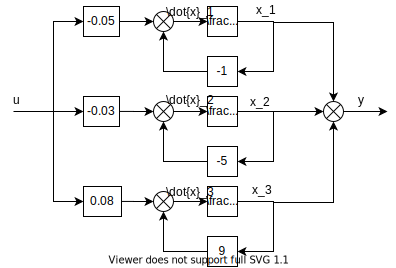
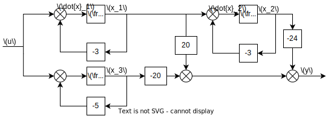
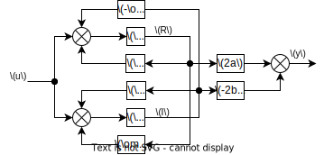

Capítulo 3 Modelagem
Neste capítulo vamos estudar diferentes formas de obter equações de estados.
3.1 Sobre a não unicidade da representação de estados
Um sistema LIT pode possuir diferentes representações de estados. Isso depende de quais variáveis de estados são escolhidas para a representação. O mesmo sistema pode admitir diferentes conjuntos de estados.
Isso significa que um mesmo sistema pode possuir diferentes matrizes de representação, todas de mesma ordem. A representação não é única, por isso não unicidade.
Isso não ocorre com a representação por função de transferência. Um sistema possui uma e apenas uma função de transferência padrão.
3.2 Equação diferencial simples
Para um sistema representado por uma EDO simples, sem derivadas do sinal de entrada, pode-se obter as equações de estado de um jeito bastante simples. Para isso basta escolher uma variável de estado como a derivada da outra, normalmente em sequência.
Exemplo: \[ \dddot{y} + 6\ddot{y} + 11\dot{y} + 6y = 6u \] Sistema de 3a ordem, então definimos os estados como a saída e suas derivadas até ordem 2. \[\begin{aligned} x_1 &=y\\ x_2 &=\dot{y}\\ x_3 &=\ddot{y} \end{aligned}\]Para um sistema de 2a ordem, definimos os estados como saída e sua derivada.
Generalizando, para um sistema de ordem \(n\), definimos a saída e todas as derivadas até ordem \(n-1\).
Para montar a equação de estados precisamos das derivadas de cada estado. Mas pela forma como definimos cada um, as duas primeiras derivadas podem ser obtidas em função da própria definição. \[\begin{aligned} \dot{x}_1 &=\dot{y} = x_2\\ \dot{x}_2 &=\ddot{y} = x_3 \end{aligned}\] Por último, precisamos da derivada do último estado. Note que esta é: \[\begin{aligned} x_3 &=\dddot{y} \end{aligned}\] que pode ser obtida da EDO original como: \[\begin{aligned} \dddot{y} &= -6\ddot{y} - 11\dot{y} - 6y + 6u\\ &= -6x_3 -11x_2 - 6x_1 + 6u \end{aligned}\] Assim as equações de estado são: \[\begin{aligned} \dot{x}_1 &=x_2\\ \dot{x}_2 &= x_3\\ \dot{x}_3 &=-6x_3 -11x_2 - 6x_1 + 6u \end{aligned}\]Agora basta converter para o formato matricial. Na matriz \(\mathbf{A}\) o elemento da linha \(i\) e coluna \(j\) é o coeficiente da variável \(j\) na equação \(i\) (relativa a derivada da variável \(i\)). Na matriz \(\mathbf{B}\) o elemento da linha \(i\) é simplesmente o coeficiente de \(u\) na equação \(i\).
Para o exemplo, o resultado é: \[\begin{aligned} \left[\begin{array}{c}\dot{x}_1\\ \dot{x}_2\\ \dot{x}_3\\ \end{array}\right] &= \left[\begin{array}{rrr}1 & 0 & 0\\0 & 1 & 0 \\-6 & -11 & -6\end{array}\right] \left[\begin{array}{c}{x}_1\\ {x}_2\\ {x}_3\\ \end{array}\right] + \left[\begin{array}{c}0 \\ 0 \\ 6 \end{array}\right]u \end{aligned}\]Perceba que nossa escolha inicial da sequência de estados é arbitrária. Nada impede que façamos uma permutação. por exemplo: \[ \begin{aligned} x_3 &=y\\ x_2 &=\dot{y}\\ x_1 &=\ddot{y} \end{aligned} \] Tente verificar que neste caso, a equação de estados se tornaria: \[ \begin{aligned} \left[\begin{array}{c}\dot{x}_1\\ \dot{x}_2\\ \dot{x}_3\\ \end{array}\right] &= \left[\begin{array}{rrr}-6 & -11 & -6\\ 1 & 0 & 0\\0 & 1 & 0\end{array}\right] \left[\begin{array}{c}{x}_1\\ {x}_2\\ {x}_3\\ \end{array}\right] + \left[\begin{array}{c}0 \\ 0 \\ 6 \end{array}\right]u \end{aligned} \]
3.3 Diagramas de simulação
Em algumas ocasiões, modelos dinâmicos surgem ou são projetados a partir de um diagrama de simulação.
Esses são diagramas de blocos convencionais, tais como vistos em disciplinas anteriores, obedecendo às regras de simplificação normais.
Uma característica marcante é que eles são construídos apenas com 3 elementos: o integrador, o ganho e o somador.
Isso foi convecionado para, antigamente, facilitar a implementação com eletrônica analógica, i.e., amplificadores operacionais. Atualmente, utilizamos apenas para facilitar a escrita da equação de estados.
Os diagramas são uma forma inteligível de ler as relações entre os estados do sistema e assim deduzir as equações de estados.
3.4 Forma canônica de controlador (FCC)
A FCC é um tipo de representação útil principalmente para converter uma função de transferência em equação de estados.
Considere o seguinte exemplo:
\[ \begin{aligned} G(s) &= \frac{s+2}{s^2+7s+12} \end{aligned} \]
Para construir um diagrama na forma canônica de controlador, faça o seguinte:
- Desenhe integradores em série, tantos quantos forem a ordem do sistema
- A entrada será o sinal mais a esquerda. A saída, o mais a direita.
- Realimente todos os integradores, cada um através de um ganho constante
- As realimentações devem ser ligadas a um único somador posicionado na entrada do integrador mais a esquerda. Se quiser organizar melhor, divida o somador em outros de duas entradas, imediatamente abaixo
- O valor de cada ganho de realimentação é o negativo de um coeficiente do denominador.
- Utilize os coeficientes de maior potência de \(s\) para as ligações dos integradores mais perto da entrada
- A saída do sistema é consturída a partir de um somador
- Ao somador de saída, ligue as saídas de cada integrador através de um ganho constante
- O valor de cada ganho é igual a um coeficiente do numerador
- Utilize os coeficientes de menor potência de \(s\) para as ligações dos integradores mais perto da saída
Figure 3.1: Diagrama de simulação
Para o diagrama feito, as equações de estado são:
\[ \begin{aligned} \dot{x}_2&=x_{1}\\\dot{x}_1&=u - 7 x_{1} - 12 x_{2} \end{aligned} \]
Logo a representação matricial é:
\[ \left[\begin{matrix}\dot{x}_1\\\dot{x}_2\end{matrix}\right]=\left[\begin{matrix}-7 & -12\\1 & 0\end{matrix}\right]\left[\begin{matrix}x_{1}\\x_{2}\end{matrix}\right]+\left[\begin{matrix}1\\0\end{matrix}\right]u \]
Note que os estados foram ordenados da esquerda para a direita. O que aconteceria se tivéssemos nomeado ao contrário?
3.5 FCC geral
Para um sistema geral de ordem \(n\), com função de transferência \[ \begin{aligned} G(s) &= \frac{b_1s^{n-1}+b_2s^{n-2}+\ldots b_n}{s^n+a_1s^{n-1}+a_2s^{n-2}+\ldots + a_n} \end{aligned} \]
Perceba que o coeficiente de maior grau do denominador foi feito igual a \(1\).
As matrizes da forma canônica de controlador tem a seguinte estrutura
\[ \begin{aligned} \mathbf{A} &= \left[\begin{array}{cccccc} -a_1 & -a_2 & \ldots & a_{n-1} &-a_n\\ 1 & 0 & \ldots & 0 & 0 \\ 0 & 1 & \ldots & 0 & 0 \\ \vdots & \vdots & \ldots & \vdots& \vdots \\ 0 & 0 & \ldots & 1 & 0 \end{array}\right]\\ \mathbf{B} &= \left[\begin{array}{cccccc} 1 \\ 0 \\ 0 \\ \vdots \\ 0 \end{array}\right]\\ \mathbf{C} &= \left[\begin{array}{cccccc} b_1 & b_2 & \ldots & b_{n-1} & b_n \end{array}\right]\\ D &=0 \end{aligned} \]
Observações
- Matriz \(\mathbf{A}\)
- A primeira linha é dada pelos coeficientes do denominador, com sinal trocado, ordem decrescente de potência
- Abaixo da segunda linha temos uma matriz identididade e uma coluna de zeros
- Matriz \(\mathbf{B}\)
- Primeiro elemento \(1\) e os demais zero
- Matriz \(\mathbf{C}\)
- Coeficientes do numerador, sem troca de sinal, ordem decrescente de potência
- Termo \(D\)
- Nulo (apenas se o grau do numerador for estritamente menor que o do denominador)
Observacão: A função de transferência tem o grau do denominador estritamente maior que o do numerador. Caso não seja, é necessário fazer divisão longa antes de prosseguir. O termo quociente será a matriz \(D\).
Exercício: Ache as matrizes da forma de controlador do sistema: \[ \begin{aligned} G(s) &= \frac{5s^2+8}{s(s+5)(s^2+9)} \end{aligned} \]
3.6 Forma de Jordan ou Modal
Na forma modal, os estados aparecem majoritariamente desacoplados, isto é, uma equação de estados depende apenas da sua própria variável de estado e do sinal de entrada.
Isso é possível sempre que o sistema tiver pólos reais e distintos.
Quando o sistema tiver pólos repetidos, haverá um pequeno acoplamento entre equações, mas apenas entre os estados referentes ao mesmo pólo.
Quando o sistema tiver pólos imaginários, as equações podem ser desacopladas, mas ao custo de ganhos imaginários.
Para eliminar os ganhos imaginários, podemos introduzir um pequeno acoplamento entre os estados associados aos pólos conjugados.
Exemplo resolvido:
Figure 3.2: Diagrama em forma de Jordan
A forma modal é útil para determinar rápida e intuitivamente uma propriedade chamada controlabilidade. O sistema é não-controlável quando o sinal de controle não consegue “chegar” até um determinado integrador por nenhum caminho.
Algumas observações importantes:
- Um sistema pode perder controlabilidade quando na sua função de transferência há algum cancelamento entre pólos e zeros.
- Para achar a forma modal a partir da função de transferência, use expansão em frações parciais
3.7 Pólos reais e distintos
- Ache a expansão em frações parciais da função de transferência
- Faça um diagrama para cada uma das parcelas da expansão
- Nomeie os estados (saída dos integradores) e monte as equações normalmente
Precisamos primeiro expandir e achar os resíduos (frações parciais). É possível fazer isso usando a função “residue” do módulo scipy.signal. A funçao “apart” do módulo sympy também resolve o problema, embora nem sempre da forma esperada em problemas de engenharia.
import scipy.signal as sig
import numpy as np
num = [1,3]
den = np.poly([-1,-5,9])
r,p,k = sig.residue(num,den)
r = r.round(decimals=4)
p = p.round(decimals=4)
print(r)## [-0.05 -0.0357 0.0857]## [-1. -5. 9.]Logo: \[ G(s) = \frac{-0.05}{s+1}-\frac{0.03}{s+5}+\frac{0.08}{s-9} \]
O diagrama para a representação de cada modo está a seguir

As equações de estado vão ser (verifique você mesmo!): \[ \dot{x}_1 = -x_1-0.05u \]
\[ \dot{x}_2 = -5x_2-0.03u \]
\[ \dot{x}_3 = 9x_3+0.08u \]
A equação de saída é: \[ y = x_1+x_2+x_3 \]
Por fim, a representação matricial: \[ \dot{\mathbf{x}} = \left[\begin{array}{rrr} -1 & 0 & 0\\ 0 & -5 & 0\\ 0 & 0 & 9 \end{array} \right]\mathbf{x} + \left[\begin{array}{r} 1 \\ 1 \\ 1 \end{array}\right]u \]
E a equação de saída. \[\begin{aligned} y = \left[\begin{array}{ccc}-0.05 & -0.03 & 0.08\end{array}\right]\mathbf{x} \end{aligned}\]3.8 Forma de Jordan com polos reais e repetidos
Suponha que: \[\begin{aligned} G(s) &= \frac{16s}{(s+3)^2(s+5)} \end{aligned}\]Vamos calcular rapidamente os resíduos e a expansão:
num = np.array([16,0])
den = np.convolve([1,3],[1,3])
den = np.convolve(den,[1,5])
r,p,k = sig.residue(num,den)
print(r)## [ 20. -24. -20.]## [-3. -3. -5.]Então: \[ \begin{aligned} G(s) &= \frac{20}{(s+3)}-\frac{24}{(s+3)^2}-\frac{20}{s+5} \end{aligned} \]
Observe no diagrama como devemos implementar o termo quadrático:

Observe que os estágios correspondentes ao polo repetido ficam em série, e não em paralelo, diferente dos outros.
Exercício: escreva a representação matricial
3.9 Transformação de estado
Uma única função de transferência pode ter diferentes representações de estado (matrizes)
Quando mudamos de uma representação para outra, as matrizes mudam, e os estados não são mais os mesmos. Eles adquirem outro significado físico. No entanto, as características intrínsecas do sistema, tais como pólos, zeros, estabilidade e outras permanecem as mesmas.
A explicação matemática para isso é a teoria de transformações lineares.
Supondo que a representação “velha” seja: \[\begin{aligned} \mathbf{\dot{x}} &= \mathbf{Ax+B}u\\ y &= \mathbf{Cx}+Ju \end{aligned}\] A mudança para um novo vetor de estados, digamos \(\mathbf{z}\), é representada por uma transformação linear: \[\begin{aligned} \mathbf{x} &= \mathbf{Tz} \end{aligned}\]onde \(\mathbf{T}\) é uma matriz quadrada de ordem \(n\), inversível (ou seja, é possível “ir” e “voltar” com a mudança).
Esperamos que, usando o novo vetor de estados \(\mathbf{z}\), a representação seja algo como: \[\begin{aligned} \mathbf{\dot{z}} &= \mathbf{A_nz+B_n}u\\ y &= \mathbf{C_nz}+D_nu \end{aligned}\] Pode-se mostrar que a representação “nova” se relaciona com a “velha”, usando a matriz de transformação \(\mathbf{T}\) da seguinte forma: \[\begin{aligned} \mathbf{A}_n &= \mathbf{T^{-1}AT}\\ \mathbf{B}_n &= \mathbf{T^{-1}B}\\ \mathbf{C}_n &= \mathbf{CT}\\ D_n &= D \end{aligned}\]A transformação para forma de Jordan, em particular, é um procedimento que chamamos de diagonalização
3.10 Dica útil: Matriz inversa de segunda ordem
Para fazer transformações em sistemas de ordem 2, precisamos da inversa da matriz de transformação.
Um regra rápida para achar a inversa de 2a ordem é:
- Troque a ordem dos elementos da diagonal principal
- Inverta o sinal dos elementos não diagonais
- Divida a matriz inteira pelo determinante da matriz original (supondo que ele não é zero)
Lembre-se que isso só vale para matriz de ordem 2!
Exercício: para a função de transferência \[\begin{aligned} G(s) =\frac{3s^2-1}{(s+1)(s+7)(s+5)} \end{aligned}\]- Faça o diagrama de blocos da forma de controlador
- Obtenha as matrizes da forma de controlador
- Obtenha as matrizes da forma modal
- Ache as matrizes se aplicada a transformação
3.11 Pólos complexos conjugados
Quando os polos são complexos, somos tentados a usar ganhos complexos no diagrama de blocos, o que não é possível de realizar fisicamente.
Quando há polos complexos e, consequentemente, resíduos complexos, podemos fazer um artifício baseado na própria expansão em frações para nos “livrarmos” de qualquer número complexo presente.
Suponha, por exemplo: \[\begin{aligned} G(s) &= \frac{100}{s(s^2+2s+5)} \end{aligned}\] A expansão em frações parciais dessa função é: \[\begin{aligned} G(s) &= \frac{20}{s}+\frac{-10+j5}{s+1-j2}+\frac{-10-j5}{s+1+j2} \end{aligned}\]Os pólos complexos usam ganhos de realimentação e de saída complexos. Para evitar isso, podemos usar um artifício que acopla os modos complexos entre si, mas continuando isolados dos outros modos do sistema
Para um caso geral de conjugados \[\begin{aligned} \frac{a+jb}{s-\sigma-j\omega}+\frac{a-jb}{s-\sigma+j\omega} \end{aligned}\]O diagrama de blocos (dedução um pouco trabalhosa) equivalente é:

As equações de estado são as seguintes: \[\begin{aligned} \dot{R} &= \sigma R-\omega I + u\\ \dot{I} &= \omega R-\sigma I + u\\ y &= 2a\, R -2b\, I \end{aligned}\]Assim, a contribuição do par conjugado para a forma modal é a seguinte:
- Na matriz de estados, encaixe a seguinte matrix \(2\times 2\) feita a partir das partes real e imaginária dos pólos complexos \[\begin{aligned} \left[\begin{array}{cc} \sigma & -\omega\\ \omega & \sigma\end{array}\right] \end{aligned}\]
- Na matriz de entrada, a contribuição é apenas um vetor coluna de 1’s
- Na matriz de saída, a contribuição é uma linha de dois elementos construído a partir das partes real e imaginária do resíduo complexo \[\begin{aligned} \left[\begin{array}{cc} 2a & -2b\end{array}\right] \end{aligned}\]
Para a parcela complexa, vamos tomar como referência o pólo \(s=-1+j2\). Para este, \(\sigma = -1\) e \(\omega=2\)
O resíduo complexo correspondente é \(-10+j5\). Então, neste caso: \(a=-10\) e \(b=5\)
Assim as equações de estado serão: \[\begin{aligned} \dot{x}_1 &= u\\ \dot{x}_2 &= -x_2-2x_3+u\\ \dot{x}_3 &= 2x_2-x_3+u\\ y &= 20x_1 -20x_2+10x_3 \end{aligned}\]Construa as matrizes a partir daqui. Observe que a matriz de estados não é mais diagonal (mas é quase)